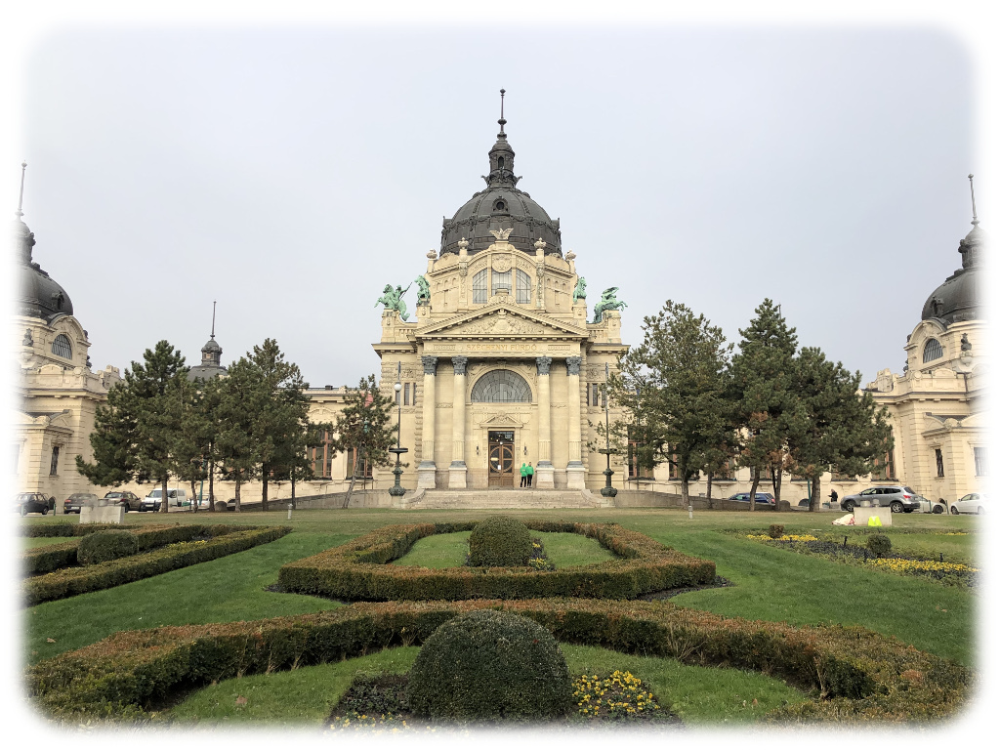

The City and The City
December 2, 2018
Run Right Along
I had a whole post written out last Saturday, ready to upload. It talked about party idealism in stories, looking at how the main characters interacted in Disenchantment, The Dragon Prince, and Hilda. And... it wasn’t very good. It didn’t have a cohesive narrative, and it wandered into the territory of reviews more than I would like. So I dropped it and missed a week, unfortunately.
This weekend, I traveled to Budapest to see my friend Joel, who is studying abroad there. We walked the city, and he told me about the history of the city — the very big city that contains more than a fifth of Hungary’s population. It’s a behemoth, or rather two behemoths — Buda and Pest, united in 1873 to grow to a ridiculous size. While not exactly like China Miéville’s The City and the City, Budapest can feel as dense as two cities on top of one another. Joel is a comedian as well as a math major, and I’m sure some of what he told me wasn’t entirely true, but I could believe all of it. This is a city that has to be seen to be grasped.

{kind=link}
{kind=link}


We stopped by a local Christmas market for Lángos, a fried, doughnut-like round of dough topped with cheese and sour cream. Maybe I was just famished, but I thought it was better than most doughnuts I’ve had. From there, we made for the Danube, the great river that once separated the two cities. We took one of the handful of bridges over to the other side, climbed a mountain to another Christmas market surrounding a castle, and came down over another bridge, pictured above. Finally, we stopped for an excellent dinner with some of Joel’s fellow studying-abroad students. By the time we got back to his apartment, I was exhausted.
Zaubermachen
It was cold and on the brink of snow the entire next day. Joel was taking the Putnam exam at 4, so we had to pack our sightseeing into the morning. The highlight of the day, and I think of the trip, was the Széchenyi bathhouse. I don’t have any pictures of the interior, but it’s a massive collection of thirty-odd pools and saunas, including a gargantuan one the size of five swimming pools — outside. Take twenty steps to get to the water and your feet are frozen.

{kind=link}
A few more highlights from that day: a statue of an anonymous scribe, yet another Christmas market, a plaza commemorating many of Hungary’s heroic figures, and an impressively ornate museum.
{kind=link}
{kind=link}
{kind=link}
{kind=link}
It really did go by in a blink, cliche as that may be. Just as I was getting used to Budapest, it was time to undertake the slew of transportation needed to get back home. But the weekend was a great experience, and the next time I find myself in Europe, Budapest will be on the list.
I don’t come from Detroit
But her diesel motors pulled me
And I followed ’til I finally lost my way
The Avett Brothers, The Once and Future Carpenter